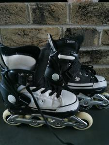
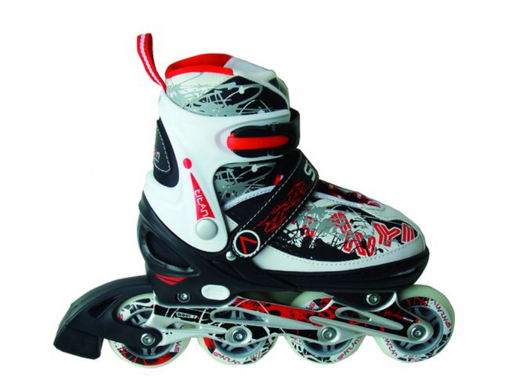

Riedučiai - Decathlon
- Riedučiai
Riedučiai Flying Eagle F3 F110 3X3 Riedučiai Flying Eagle F3 F110 3X3. Vieni aukščiausios klasės riedučių rinkoje, Flying Eagle F3110 Stingray, šie riedučiai pasižymi tokia pat aukšta technologija, kaip 4x80mm riedučiai, tačiau suteiks jum stabilesnį ir greitesnį riedėjimą.Techninės specifikacijos: - Patogus, kietas bato kiautas, apsaugos jūsų pėda nuo sumušimų ... - Riedučiai | Senukai.lt
SEBA HIGH LIGHT BLACK riedučiai . 306,00 € 360,00 € -15%. Išparduota. Išparduota. Pridėti į pageidavimus . Išparduota . FR Skates FRW 80 riedučiai . 199,00 € Išparduota. Pridėti į pageidavimus . Stabdis riedučiams FR Skates/SEBA FRBRK-4W. 17,90 € - Riedučiai NIJDAM | skorpionas.lt
Riedučiai vaikams ar riedučiai suaugusiems, nesvarbu, kam norite išrinkti, svarbiausia, atkreipti dėmesį į šiuos kelis pagrindinius kriterijus. Ratukai – kuo ratukai didesni ir kietesni, tuo riedučiai bus greitesni, kuo mažesni ir minkštesni – tuo lėtesni, tačiau manevringesni ir lengviau valdomi. - Paspirtukai, riedlentės, riedučiai ir kita | Senukai.lt
-20% Riedučiai retro Nijdam 52RF, 37 dydis 54,87 € 68,59 € -20% Reguliuojamo dydžio riedučiai NIJDAM 52SJ, 30-33 dydis 43,67 € 54,59 € Apranga ir avalynė. Apranga ir avalynė Sportinė apranga. Plaukimo kostiumai. Maudymukai ... - Riedučiai (37) - WinnerSport
Welcome to Decathlon, explore a huge range of Freestyle riedučiai, Riedučiai, Quad tipo riedučiai equipment and gear. Enjoy 365 days return policy and 2 - Riedučiai - Decathlon
2rieduciai.lt: K2 riedučiai, riedučių dalys (ratukai, guoliai). Pas mus platus pasirinkimas, geros kainos su didele nuolaida už tikrai aukštos kokybės riedučius. Prekiaujame naujais ir mažai naudotais Prekiaujame ir kitų gamintojų (SEBA, Rollerblade, Powerslide, SALOMON, FILA) riedučiais. Prekyba naujais ir naudotais riedučiais, riedučių dalimis ir aksesuarais. - 2rieduciai.lt - 2rieduciai - Išparduotuvė 2 RIEDUČIAI.LT
Riedučiai taip pat yra puiki priemonė pasportuoti ir patirti puikių emocijų. Važinėdami riedlente ir riedučiais būtinai naudokite riešų, kelių ir alkūnių apsaugas. Paspirtukas yra saugesnė ir praktiškesnė transporto priemonė, nes jo valdymui nereikia jokių specialių įgūdžių. - Riedučiai suaugusiems Vilniuje | - Slides.lt
Riedučiai Fila PRIMO AIR FLOW 127.20 € Siūlyti savo kainą Siūloma kaina € *Jūsų vardas *Jūsų el. paštas *Telefono numeris * būtina užpildyti Siūlyti. 159.00 € Daugiau-20 % . Riedučiai Fila Plume 143.20 ... - Riedučiai - AivaShop.lt
Riedučiai su minkštu batu Ši riedučių rušis išskirtinė tuo, kad stabilumą kojoms suteikia ne išorinė medžiaga, o vidinė. Šie batai pagaminti iš ekologinės odos arba kitos tvirtos medžiagos. Šie riedučiai irgi turi paklausą, nes yra lengvi, gerai vedinasi ir atrodo stilingai. Riedučiai hibridinės konstrukcijos - Riedučiai - Streetboards
Riedučiai tiek suaugusiems, tiek vaikams turi labai daug privalumų. Nurodome pačius pagrindinius, kurie turėtų Jus paskatinti įvertinti riedučių teikiamą naudą. Žinoma, bene pats didžiausias privalumas yra tai, kad riedučiai padeda labai treniruoti kojas. Visi, kurie nori lieknų, tačiau tuo pačiu stangrių kojų – kasdien ...

Meniu
Uždaryti
Atrask VISAS SPORTO ŠAKAS Turite klausimų ? Mano parduotuvė Mano paskyra Krepšelis 0Jūsų pirkinių krepšelis tuščias.
Visos sporto šakos A Aitvarai, sausumos aitvarai Alpinizmas Amerikietiškasis futbolas B Badmintonas Baidarės Banglentės Batutai Beisbolas Biliardo sportas Bodyboardai Boksas Braziliškas Jiu-Jitsu Bumerangai, skraidančios lėkštės Buriavimas Bėgimas Bėgimas bekele Bėgimas plentu D Dailusis plaukimas Dviračiai: BMX Dviračiai: MTB kalnų dviračiai Dviračiai: Miesto dviračiai Dviračiai: Plentiniai dviračiai Dviračiai: Vaikiški dviračiai Dviračiai: hibridiniai dviračiai Dviračiai: sulankstomi dviračiai Dziudo, aikido F Fechtavimas Futbolas G Golfas Grindų riedulys I Irklentė (SUP) J Joga Jojimas Jėgos aitvarų sportas K Kanjoningas Karatė Karpių žvejyba Krepšinis Kultūrizmas ir cross treniruotės Kūdikių gimnastika Kūno rengybos kardiotreniruotė L Laipiojimas Ledo ritulys Lengvoji atletika M Medžioklė Meninė ir ritminė gimnastika N Nardymas: freediving Nardymas: scuba diving Nardymas: snorkeling O Orientacinis sportas P Padelis Paplūdimio tenisas Paplūdimio tinklinis Paspirtukai Pačiūžos Penkių žaidėjų futbolas Petankė Pilatesas Plaukimas Plaukimas burlente Plėšriųjų žuvų žvejyba Povandeninė žūklė Pucks and Skittles R Rankinis Reabilitacijos prekės Regbis Riedlentės, ilgalentės, balansinės Riedučiai Rogučių sportas S STOVYKLAVIMAS Salės futbolas Salės ritulys Skvošas Slidinėjimas Slidinėjimas: Lygumų slidinėjimas Slydlentės Smiginis Snieglentės Sportinis buriavimas Sportinė gimnastika Stalo tenisas Sūriavandenių žuvų žvejyba T Tekvondo Tenisas Tinklinis Triatlonas V Vaikščiojimas juosta ( Slackline ) Vaikščiojimo batai Vandenlentės, vandens slidės, plaustai Vandens aerobika Vandensvydis Š Šaudymas iš lanko Šaudymo sportai Šiaurietiškas ėjimas Šokiai Ž Žolės riedulys Žvejyba su meškere Žygiavimas ir keliavimas pėsčiomis Moterys Batai Aksesuarai Batai žygiavimui Bėgimo batai Flip flpai, šlepetės Guminiai batai Kedai Salės batai Sandalai Žieminiai batai Dovanos moterims Drabužiai Apatiniai Berankovės striukės Fliso striukės Kelnės Kepurės, pirštinės, šalikai Kojinės Marškinėliai Megztiniai, džemperiai Rūbai nuo lietaus Sport BH Sportiniai marškinėliai Striukės Suknelės, sijonai Tympos Šortai Maudymosi apranga Bikiniai, šortai Marškinėliai nuo UV Maudymosi kostiumėliai Neopreniniai drabužiai Pončai Paskutiniai vienetai Vyrai Apranga Apatiniai drabužiai Apranga nuo lietaus Berankovės striukės Fliso striukės Kelnės Kepurės, pirštinės, šalikai Kojinės Marškiniai Marškinėliai Megztiniai, džemperiai Sportiniai marškinėliai Striukės Tamprės Šortai Batai Aksesuarai Bėgimo batai Flip flopai, šlepetės Guminiai batai Kedai Salės batai Sandalai Žieminiai batai Žygiavimo batai Dovanos vyrui Maudymosi apranga Marškinėliai nuo UV Neoprenas Pončai Šortai Paskutiniai vienetai Vaikai Dovanos vaikams Drabužiai Apatiniai drabužiai Apranga nuo lietaus Berankovės striukės Kelnės Kepurės, pirštinės, šalikai Kojinės Marškinėliai, polo Megztiniai, džemperiai Sportiniai kostiumai Sportiniai marškinėliai Striukės Tamprės, tympos Šortai Kūdikiams Batai kūdikiams Drabužiai kūdikiams Maudymosi apranga Kūno kultūra Maudymosi apranga Apatiniai berniukams Apranga nuo UV Mergaitėms Neoprenas Pončai Paskutiniai Vienetai Vaikiški Batai Aksesuarai Bėgimo batai Flip flopai, šlepetės Guminiai batai Kedai Salės batai Sandalai Žieminiai batai Žygiavimo batai Eko-dizaino produktai Paskutiniai vienetai Priedai Dviračių stovai, dangalai Elektroniniai prietaisai Laikrodžiai, GPS, pedometrai, ausinukai Ausinės GPS, kompasai Laikrodžiai Pedometrai, išmaniosios apyrankės, svarstyklės Racijos Telefonų priedai ir aksesuarai Vaizdo kameros Lemputės ir įkrovikliai Akumuliatoriai Lemputės Įkrovikliai Hidratacija ir mityba Atsigavimui po treniruotės Didelio proteinų kiekio batonėlis Gėrimas atsistatymui po treniruotės Buteliukas vandeniui Modernus dviejų funkcijų buteliukas vandeniui Vandens buteliukas ir izoterminis dėklas Treniruotė – didelis intensyvumas Energetinis gelis Energinis batonėlis Izotoninis gėrimas – ilgai trunkančioms treniruotėms Marcipanas ir nuga Vaisių juostelės Treniruotė – mažas intensyvumas Vanduo ir nesaldinti gėrimai Šokoladas ir glaistyti batonėliai Treniruotė – vidutinis intensyvumas Be gliuteno Elektrolitai ir bikarbonatas Izotoninis gėrimas Javainis Vaisių gėrimas Treniruotės pasiruošimo laikas Energiniai pusryčiai Maltodekstrinas Šaldytas maistas Krepšiai ir lagaminai Kelioniniai lagaminai Kelioniniai priedai Kuprinės Maišeliai, krepšiai Vyriškos rankinės, rankinės su ilgu dirželiu Proteinai ir priedai Kokteilių plaktuvai ir kiti pasiūlymai Papildai Amino rūgštys ir BCAA Kreatinas ir pasiruošimas treniruotei L-karnitinas ir papildai riebalų deginimui Vitaminai ir mineralai Raumenų augimas Kreatinas ir pasiruošimas treniruotei Papildas masei priaugti Proteinų batonėliai raumenų augimui Raumenų palaikymui Amino rūgštys ir BCAA Batonėliai po sporto Daržovių proteinai Išrūgų ir kazeino mišinys Išrūgų proteinai Kazeinas Vitaminai ir mineralai Svorio kontrolei L-kamitinas ir papildai riebalų deginimui Proteinai lieknėjimui Proteinų desertas Sportiniai akiniai nuo saulės ir žiūronai Akinių nuo saulės priedai Akiniai nuo saulės – dirželiai Akiniai nuo saulės – dėklai Akiniai nuo saulės – minkštos servetėlės Ant akinių dedami stiklai nuo saulės ir laikiklis Sportiniai akiniai nuo saulės suaugusiesiems Buriavimo ir jėgos aitvarų sporto akiniai nuo saulės Dviračių sporto ir bėgimo akiniai nuo saulės Medžioklės akiniai nuo saulės Sportinio ėjimo akiniai nuo saulės Žvejybos akiniai nuo saulės Žygio ir slidinėjimo akiniai nuo saulės Žiūronai ir monokliai Didinamasis stiklas Medžioklės žiūronai ir monokliai Žygio monokliai Žygio žiūronai Žygio akiniai nuo saulės vaikams Kūdikių akiniai nuo saulės Vaikiški akiniai nuo saulės Taurės, medaliai Įtvarai ir apsaugos Alkūnėms Bintai Blauzdoms Keliams Kinezeterapinės juostos Kulkšnims Nugarai Pečiams Riešui, pirštams Vidpadžiai Šlaunims > Visos sporto šakos > RiedučiaiRiedučiai
Freestyle riedučiai Quad tipo riedučiai Riedučiai 2 metų garantija Grąžinimas per 365 dienas Prekių pristatymas Dažni Klausimai Dydžių lentelė Saugus apmokėjimas Decathlon Kontaktai Karjera Mano „Decathlon“ paskyra Atsiliepimai Parduotuvės Vilniaus parduotuvės kontaktai Vilniaus parduotuvės dirbtuvės Informacija DUK Mano paskyra Mano elektroniniai užsakymai Kalba: anglų Prekės, išimtos iš apyvartos Snieglenčių apkaustai Rocky Screwgate Carabiner Fouganza Leather Pirštinės Baby Seat Vaikiška dviračio kėdutė 100 bclip „Decathlon“ veikia 44 šalyse Teisinė informacija Bendrosios pardavimo sąlygos Bendrosios naudojimo sąlygos Asmeniniai duomenys ir slapukai Visos teisės saugomos 2020 - Decathlon Siekdami pagerinti naršymo kokybę, statistiniais ir rinkodaros tikslais mes naudojame slapukus (angl. „cookies“). Jeigu sutinkate su slapukų įrašymu šiais tikslais, spauskite „Sutinku“ ir toliau naudokitės svetaine. Spauskite čia, jei norite sužinoti apie slapukus Sutinku

Mauris vulputate dolor
Rutrum fermentum nibh in augue praesent urna congue rutrum.
Etiam posuere